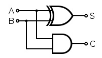
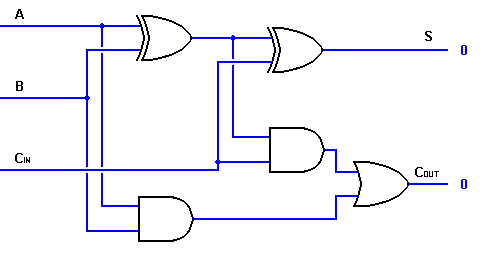

Digital Adder
Features
- It is a digital device capable of adding two digital n-bit binary numbers.
- It adds two binary numbers A and B to produce a sum S and a carry C.
- It is of below types:
- Half Adder:
- It is used to add two binary bits (0 and 1) and produce a sum S and a carry C.
-
| Input A | Input B | Sum | Carry |
|---|
| 0 | 0 | 0 | 0 |
| 0 | 1 | 1 | 0 |
| 1 | 0 | 1 | 0 |
| 1 | 1 | 0 | 1 |
- It can be constructed from AND gate and XOR gate as shown below:

- XOR gate gives the sum bit.
- AND gate gives the carry bit.
- Sum is true(1) in case there are odd number of true(1) inputs.
- Carry is true(1) in case there are even number of true(1) inputs.
- Full Adder:
- It is used to add three binary bits and produce a sum S and a carry C.
- It has three inputs
- The first two inputs are normal bits to add.
- The third input is a carry input designated as CIN.
-
| Input A | Input B | Input C (CIN) | Sum | Carry |
|---|
| 0 | 0 | 0 | 0 | 0 |
| 0 | 0 | 1 | 1 | 0 |
| 0 | 1 | 0 | 1 | 0 |
| 0 | 1 | 1 | 0 | 1 |
| 1 | 0 | 0 | 1 | 0 |
| 1 | 0 | 1 | 0 | 1 |
| 1 | 1 | 0 | 0 | 1 |
| 1 | 1 | 1 | 1 | 1 |
- Sum is true(1) in case there are odd number of true(1) inputs.
- Carry is true(1) in case there are even number of true(1) inputs.
- It can be constructed using two half adders and an OR gate as shown below:

- The sum bit on adding A and B is denoted as A ⨁ B
- The carry bit on adding A and B is denoted as AB
Examples
Frequently Asked Questions